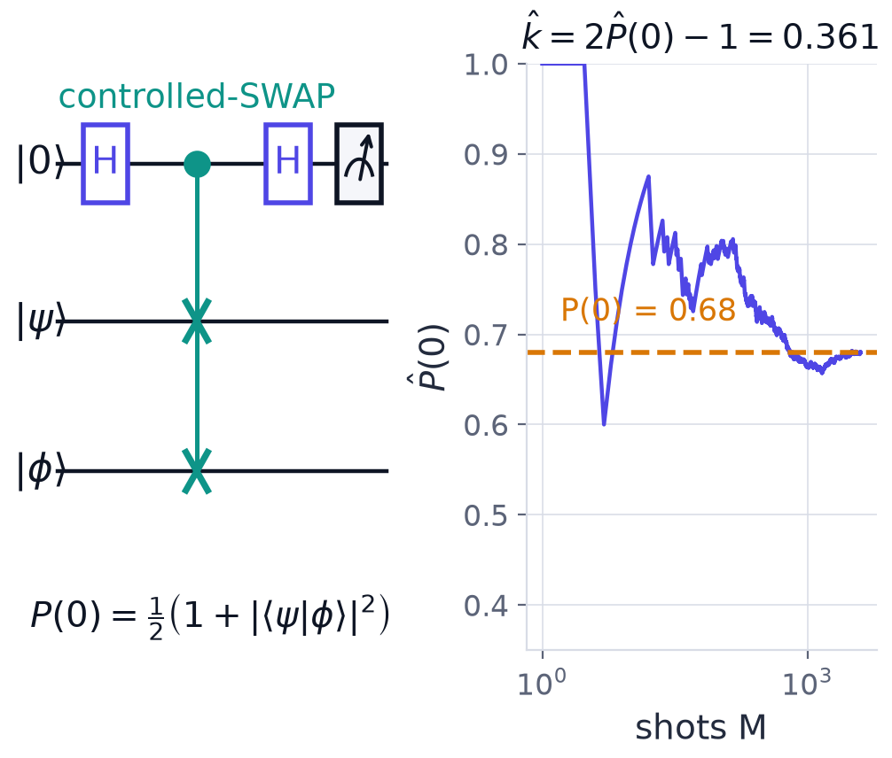
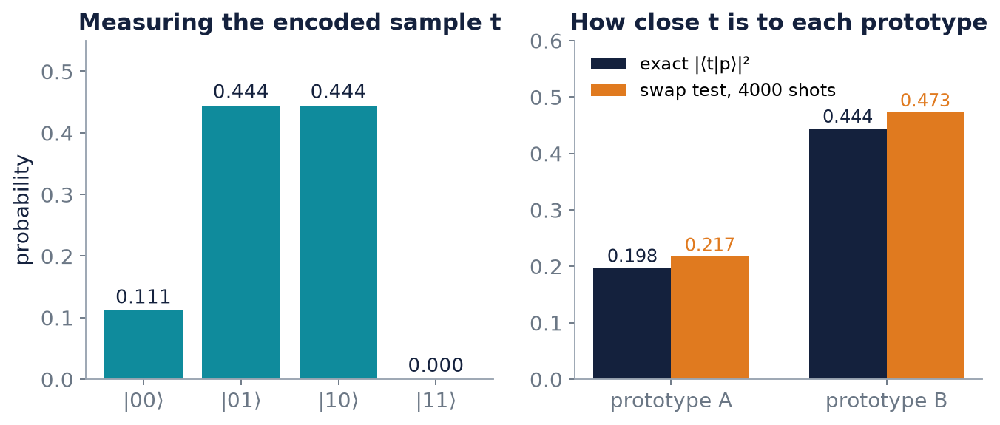
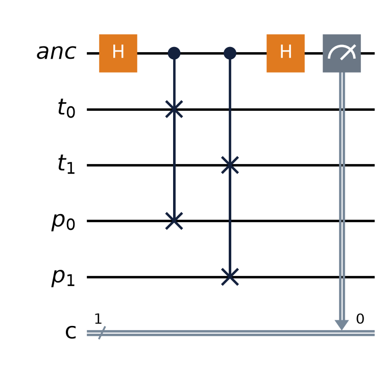

Chapter 7: Measuring Overlaps: the Inversion Test and the SWAP Test¶
The fidelity kernel is beautiful in theory. How do you get the number out of a machine? A kernel entry is a squared overlap, and an overlap of two quantum states cannot be read off from a single measurement, since amplitudes are not directly observable. This chapter derives the two standard ways of estimating it. The inversion test spends depth and no extra qubits; the SWAP test spends width instead. For each we derive the probability that carries the answer, the estimator, its standard error and the shot budget. The chapter closes with a complete worked classifier that assigns a sample to the nearest of two prototype vectors using nothing but the SWAP test.
7.1 The inversion (compute-uncompute) test¶
Prepare the encoded state for the first data point, \(\lvert\varphi(x)\rangle=U_\varphi(x)\lvert0\rangle\). Then, on the same qubits, apply the inverse feature map for the second point, \(U_\varphi(x')^\dagger\), and measure all qubits in the computational basis.
|0...0> ──[ U(x) ]──[ U(x')† ]── measure all qubits
If the two states were identical, everything undoes and the register returns to \(\lvert0\cdots0\rangle\) with certainty. If they differ, you land there less often. In fact the amplitude of the all-zeros string is
so the probability of the all-zeros bit string is exactly the kernel:
Estimator. Run \(M\) shots, count the all-zeros outcomes \(M_0\), and set \(\hat k=M_0/M\). This is a binomial proportion with standard error \(\sqrt{k(1-k)/M}\le1/(2\sqrt M)\), the bound attained at \(k=\tfrac12\).
Costs and cautions.
- It uses only \(n\) qubits, with no ancilla and no controlled operations, which is why it is the default method on hardware. But it doubles the circuit depth, which matters on noisy devices.
- The all-zeros outcome is one bit string out of \(2^n\). Small kernel values need many shots to be resolved to a good relative accuracy, because the count \(M_0\) is then tiny.
- Coherent errors in \(U_\varphi\) partially cancel between the compute and uncompute halves, but incoherent noise contracts \(\hat k\) towards a constant, which flattens the kernel towards the identity.
For single-qubit angle encoding the test is easy to follow: \(U(x')^\dagger U(x)=R_Y(-x')R_Y(x)=R_Y(x-x')\), so \(P(0)=\cos^2\frac{x-x'}2\), the kernel of Example 6.1.
q: ──R_Y(x)──R_Y(−x')── measure P(0) = cos²((x − x')/2)
7.2 The SWAP test¶
The second method spends width instead of depth. Put the two states in their own registers, \(\lvert\psi\rangle\) and \(\lvert\phi\rangle\), and add one extra qubit, the ancilla, initially \(\lvert0\rangle\). Apply a Hadamard to the ancilla; a controlled-SWAP of the two registers, controlled by the ancilla; a second Hadamard on the ancilla; and measure the ancilla.

Example 7.1: deriving the SWAP-test probability
Show that \(P(\text{ancilla}=0)=\tfrac12\big(1+\lvert\langle\psi\vert\phi\rangle\rvert^2\big)\).
Step 1, first Hadamard. The ancilla is put in an equal superposition and the data registers are untouched:
Step 2, controlled-SWAP. The \(\lvert1\rangle\) branch has its two data registers exchanged:
Step 3, second Hadamard. Using \(H\lvert0\rangle=\tfrac{1}{\sqrt2}(\lvert0\rangle+\lvert1\rangle)\) and \(H\lvert1\rangle=\tfrac{1}{\sqrt2}(\lvert0\rangle-\lvert1\rangle)\), interference sorts the symmetric and antisymmetric parts into the two ancilla branches:
Step 4, norm of the \(\lvert0\rangle\) branch. The probability of reading \(0\) is the squared norm of the first branch. The cross term is \(\langle\psi\phi\vert\phi\psi\rangle=\langle\psi\vert\phi\rangle\langle\phi\vert\psi\rangle=\lvert\langle\psi\vert\phi\rangle\rvert^2\), so
Answer. \(P(0)=\tfrac12\big(1+\lvert\langle\psi\vert\phi\rangle\rvert^2\big)\), so the fidelity kernel is recovered as \(k=2P(0)-1\).
The key line is the second Hadamard: the ancilla ends up flagging the symmetric versus the antisymmetric component of the two data registers. Identical states never produce a \(1\), since \(\lvert\psi\phi\rangle-\lvert\phi\psi\rangle=0\) then. Identical states give \(P(0)=1\); orthogonal ones give \(P(0)=\tfrac12\).
Estimator and cost. Estimate \(\hat P(0)\) from \(M\) shots and set \(\hat k=2\hat P(0)-1\). The standard error is \(2\sqrt{P(1-P)/M}\), and resolving \(k\) to additive accuracy \(\varepsilon\) costs \(M=O(1/\varepsilon^2)\) shots (Hoeffding). The test needs \(2n+1\) qubits and controlled-SWAP gates, which are expensive to compile (one per pair of qubits, each several CNOTs). In exchange the two states may be produced by different circuits, which is useful when no inverse is available. A cheaper destructive variant exists for hardware.
7.3 Shot budgets¶
Example 7.2: estimator, variance and number of shots
A SWAP test of two encoded states is run for \(10\,000\) shots and returns \(6800\) zeros.
(b) Estimate the kernel entry. (c) How many shots are needed for a standard error of \(\varepsilon=0.01\)?
Step 1, point estimate. The observed zero-frequency is \(\hat p=6800/10\,000=0.68\), so \(\hat k=2\hat p-1=0.36\).
Step 2, error propagation. The zero-count is binomial, with \(\operatorname{Var}\hat p=p(1-p)/M\). The estimator doubles \(\hat p\), so the variance is multiplied by \(4\):
Step 3, shots at this \(p\). Insert \(p=0.68\) and demand \(\sqrt{\operatorname{Var}\hat k}=0.01\): \(M=\dfrac{4(0.68)(0.32)}{(0.01)^2}=\dfrac{0.8704}{10^{-4}}\approx8704\).
Step 4, worst case. The variance is maximal at \(p=\tfrac12\), where \(4p(1-p)=1\), giving the familiar bound \(M=1/\varepsilon^2=10^4\).
Answer. (b) \(\hat k=0.36\); (c) about \(8704\) shots at \(p=0.68\), and \(10^4\) in the worst case \(p=\tfrac12\).
Remark. A full Gram matrix needs \(O(N^2)\) entries, so the total shot count scales quadratically with the dataset size (Chapter 8).
Inversion test against SWAP test
The two formulas allow a direct comparison. For a kernel value \(k\) the SWAP estimator has \(\operatorname{Var}\hat k=(1-k^2)/M\) (since \(4p(1-p)=(1+k)(1-k)\) for \(p=\frac{1+k}2\)), at most \(1/M\). The inversion estimator has \(\operatorname{Var}\hat k=k(1-k)/M\), at most \(1/(4M)\). So for the same number of shots the inversion test is never less precise, and for additive accuracy \(\varepsilon\) it needs at most \(1/(4\varepsilon^2)\) shots against the SWAP test's \(1/\varepsilon^2\). The SWAP test earns its place when the two states come from different circuits or no inverse is available.
| Inversion test | SWAP test | |
|---|---|---|
| Qubits | \(n\) | \(2n+1\) |
| Extra gates | none, but depth is \(2\times\) the encoding | controlled-SWAPs, expensive to compile |
| Quantity measured | probability of all zeros \(=k\) | ancilla probability \(P(0)=\frac{1+k}2\) |
| Shots for additive accuracy \(\varepsilon\) | at most \(\frac{1}{4\varepsilon^2}\) | at most \(\frac1{\varepsilon^2}\) |
| Needs the inverse circuit | yes | no; two different circuits allowed |
7.4 A worked classifier: nearest prototype by the SWAP test¶
Example 7.3: amplitude encoding and a SWAP-test classifier
Two classes are each represented by a prototype vector. A new sample is assigned to the prototype it is most similar to, measured by the SWAP test.
| vector | features | role |
|---|---|---|
| \(A\) | \((2,1,0,2)\) | prototype, class A |
| \(B\) | \((0,1,2,2)\) | prototype, class B |
| \(t\) | \((2,4,4,0)\) | new sample |
(a) Amplitude-encode \(t\) on two qubits and give its measurement probabilities. (b) Compute \(\lvert\langle t\vert A\rangle\rvert^2\) and \(\lvert\langle t\vert B\rangle\rvert^2\) by hand. (c) Predict the SWAP-test \(P(0)\) for each prototype. (d) Classify \(t\) and check that the answer survives shot noise.
Step 1, normalise. Amplitudes must have unit length. \(\lVert t\rVert=\sqrt{4+16+16+0}=6\), so \(\hat t=(1,2,2,0)/3\). \(\lVert A\rVert=\sqrt{4+1+0+4}=3\), so \(\hat A=(2,1,0,2)/3\). \(\lVert B\rVert=\sqrt{0+1+4+4}=3\), so \(\hat B=(0,1,2,2)/3\).
Step 2, encode \(t\).
with probabilities \(\tfrac19=0.1111\), \(\tfrac49=0.4444\), \(\tfrac49=0.4444\), \(0\). The encoding has lost the length of \(t\): \((2,4,4,0)\) and \((1,2,2,0)\) give the same state, and only the direction is compared.
Step 3, overlaps. Multiply component by component:
so \(\lvert\langle t\vert A\rangle\rvert^2=\tfrac{16}{81}=0.1975\) and \(\lvert\langle t\vert B\rangle\rvert^2=\tfrac{36}{81}=0.4444\).
Step 4, the SWAP test. \(P(0)=\tfrac12\big(1+\lvert\langle t\vert p\rangle\rvert^2\big)\):
| prototype | \(\lvert\langle t\vert p\rangle\rvert^2\) | predicted \(P(0)\) |
|---|---|---|
| \(A\) | 0.1975 | 0.5988 |
| \(B\) | 0.4444 | 0.7222 |
\(P(0)=1\) would mean identical states and \(\tfrac12\) orthogonal. The sample scores \(0.7222\) against \(B\) and only \(0.5988\) against \(A\), so \(t\) points much more nearly in \(B\)'s direction. The circuit never reads out a single amplitude of \(t\), \(A\) or \(B\); it measures only their similarity.
Step 5, shot noise. With \(M=4000\) shots, the overlap estimate \(2\hat P(0)-1\) has standard error \(2\sqrt{P(1-P)/M}\approx0.015\). In one simulated run:
| prototype | exact overlap | measured \(\hat P(0)\) | overlap estimate |
|---|---|---|---|
| \(A\) | 0.1975 | 0.6085 | 0.217 |
| \(B\) | 0.4444 | 0.7365 | 0.473 |
Each estimate is within about two standard errors of its exact value. The gap between the classes, \(0.247\), is about \(12\) standard errors of the difference of the two estimates (each has \(\sigma\approx0.015\), so the difference has \(\sigma\approx0.021\)).
Answer. \(t\) is closest to prototype \(B\) (overlap \(0.444\) against \(0.198\)), and the SWAP test separates them by a wide margin at 4000 shots.


Because the registers hold two qubits each, the controlled swap is applied once for each qubit pair, as Figure 7.3 shows. The whole computation can be simulated with a few lines of NumPy.
def cswap_matrix(n_reg):
"""Controlled swap of two n_reg-qubit registers; the control is the leading qubit."""
dim = 2 ** (1 + 2 * n_reg)
U = np.zeros((dim, dim))
mask = 2 ** n_reg - 1
for b in range(dim):
anc, a, c = b >> (2 * n_reg), (b >> n_reg) & mask, b & mask
b2 = (anc << (2 * n_reg)) | (c << n_reg) | a if anc else b
U[b2, b] = 1
return U
def swap_test_p0(u, v):
"""Exact probability that the ancilla reads 0."""
n = int(np.log2(len(u)))
reg = np.eye(2 ** (2 * n))
Hanc = np.kron(H, reg)
psi = np.kron(ket0, np.kron(u, v))
psi = Hanc @ cswap_matrix(n) @ Hanc @ psi
return probs(psi)[: 2 ** (2 * n)].sum() # ancilla = 0 is the first half
unit = lambda v: np.array(v, dtype=complex) / np.linalg.norm(v)
A, B, t = unit([2, 1, 0, 2]), unit([0, 1, 2, 2]), unit([2, 4, 4, 0])
print("encoded t:", probs(t).round(4))
for name, p in [("A", A), ("B", B)]:
f = abs(np.vdot(t, p)) ** 2
print(name, f"overlap {f:.4f} P(0) predicted {(1 + f) / 2:.4f} "
f"SWAP circuit {swap_test_p0(t, p):.4f}")
encoded t: [0.1111 0.4444 0.4444 0. ]
A overlap 0.1975 P(0) predicted 0.5988 SWAP circuit 0.5988
B overlap 0.4444 P(0) predicted 0.7222 SWAP circuit 0.7222
The simulated circuit reproduces the closed-form prediction exactly. Drawing 4000 shots with sample from the toolkit would give estimates scattered about these values with the standard error computed in Step 5.
7.5 Summary¶
Chapter Summary
- Inversion test: apply \(U(x)\) then \(U(x')^\dagger\) on \(n\) qubits; \(P(0\cdots0)=k(x,x')\). No ancilla, but twice the depth; standard error \(\le\frac1{2\sqrt M}\); incoherent noise flattens the kernel towards the identity.
- SWAP test: an ancilla controls a swap of two registers between two Hadamards; \(P(0)=\tfrac12(1+\lvert\langle\psi\vert\phi\rangle\rvert^2)\), so \(k=2P(0)-1\). Needs \(2n+1\) qubits and controlled-SWAPs; allows two different circuits; \(O(1/\varepsilon^2)\) shots.
- The SWAP estimator has variance \(4p(1-p)/M\le1/M\); the inversion estimator at most \(1/(4M)\). Per shot, inversion is never less precise.
- Amplitude encoding plus the SWAP test gives a nearest-prototype classifier that never reads an amplitude, only a similarity. The length of the vectors is lost; only direction is compared.
7.6 Exercises¶
Exercise 7.1
Show from the SWAP-test formula that identical states give \(P(0)=1\) and orthogonal states give \(P(0)=\tfrac12\).
Answer
Identical: \(\lvert\langle\psi\vert\psi\rangle\rvert^2=1\), so \(P(0)=\tfrac12(1+1)=1\). Orthogonal: \(\langle\psi\vert\phi\rangle=0\), so \(P(0)=\tfrac12\).
Exercise 7.2
A SWAP test returns \(7500\) zeros in \(10\,000\) shots. Estimate \(k\) and its standard error.
Answer
\(\hat p=0.75\), \(\hat k=2(0.75)-1=0.5\). The standard error is \(2\sqrt{0.75\cdot0.25/10^4}=2(0.00433)=0.0087\).
Exercise 7.3
How many shots give a standard error of \(0.05\) in the worst case, for the SWAP test and for the inversion test?
Answer
SWAP: \(M=1/\varepsilon^2=1/0.0025=400\). Inversion: \(M=1/(4\varepsilon^2)=100\).
Exercise 7.4
How many qubits does a SWAP test need for two 10-qubit encoded states? How many does the inversion test need?
Answer
SWAP test: \(2n+1=21\) qubits. Inversion test: \(n=10\), with twice the depth.
Exercise 7.5
(Try it yourself.) With the prototypes of Example 7.3, to which is the sample \(t=(1,0,0,1)\) closest?
Answer
\(\lVert t\rVert=\sqrt2\), so \(\hat t=(1,0,0,1)/\sqrt2\). \(\langle\hat t\vert\hat A\rangle=\frac{(1\cdot2+1\cdot2)}{\sqrt2\cdot3}=\frac{4}{3\sqrt2}\), whose square is \(\tfrac{16}{18}=0.889\). \(\langle\hat t\vert\hat B\rangle=\frac{(0+2)}{3\sqrt2}\), whose square is \(\tfrac4{18}=0.222\). So \(t\) is closest to \(A\).
Exercise 7.6
Show that for \(\lvert\psi\rangle=\lvert\phi\rangle\) the SWAP-test ancilla can never read \(1\).
Answer
The \(\lvert1\rangle\) branch after the second Hadamard is \(\tfrac12\big(\lvert\psi\phi\rangle-\lvert\phi\psi\rangle\big)\), which vanishes when \(\psi=\phi\). So \(P(1)=0\).
Exercise 7.7
Derive the probability of the all-zeros outcome in the inversion test for \(U(x)=R_Y(x)\) on one qubit.
Answer
\(U(x')^\dagger U(x)=R_Y(-x')R_Y(x)=R_Y(x-x')\) (rotations about the same axis add). So \(P(0)=\cos^2\frac{x-x'}2\), the kernel of Example 6.1.
Exercise 7.8
Why does incoherent noise make an estimated kernel look like the identity matrix, and what does that mean for learning?
Answer
Noise contracts every measured overlap towards a constant, driving off-diagonal entries towards zero while the diagonal stays at \(1\). A Gram matrix near the identity says that every point is similar only to itself: the model memorises the training set rather than generalising.